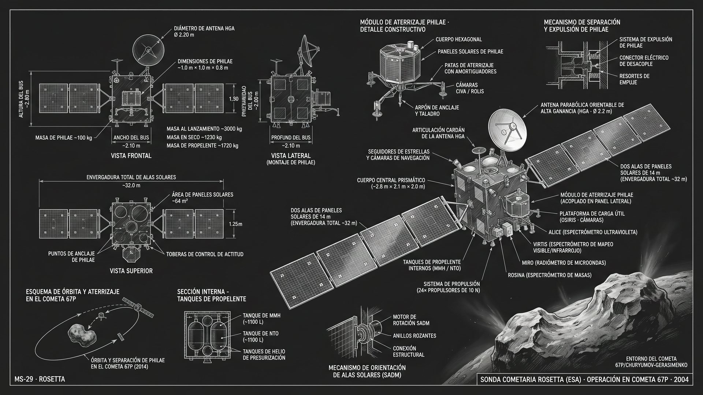

Rosetta

Fue la primera nave en orbitar un cometa y la primera en posar un robot en su superficie. En el hielo de 67P encontró glicina, una de las piezas con las que se construye la vida.
Descenso controlado y toma de contacto el 30 de septiembre de 2016 en la región Ma'at, junto al pozo Deir el-Medina; el día anterior estaba a unos 23 km del núcleo. La misión concluyó con ese impacto planeado.. Personas: Kathrin Altwegg, Mark Hofstadter, Bonnie Buratti, Art Chmielewski
Lo que hizo
- Mi encargo — Alcanzar el cometa 67P/Churyumov-Gerasimenko, ponerme en órbita a su alrededor y posar en su superficie el aterrizador Philae. Recorrí 7.900 millones de kilómetros y reuní 220 GB de datos.
- El primer robot — El 12 de noviembre de 2014 Philae se separó de mí y tomó contacto con el cometa: hizo las primeras imágenes desde la superficie de uno de estos cuerpos y completó cerca del 80% de su primera secuencia científica.
- Los pozos de Ma'at — En la región Ma'at encontré pozos activos de más de 100 metros de diámetro y entre 50 y 60 de profundidad, con montículos de un metro que podrían ser las piezas con las que se formó el cometa.
Modelo 3D, chat y cómic, en tres idiomas
Fuentes
- science.nasa.gov/mission/rosetta-philae/
- www.jpl.nasa.gov/news/farewell-rosetta-esa-mission-to-end-on-comet-surface/
- sci.esa.int/web/rosetta/-/55116-rosetta-fuels-debate-on-origin-of-earths-oceans
Ver el índice completo · Proyecto del NASA Space Apps Challenge 2026. Contenido con fuentes citadas.